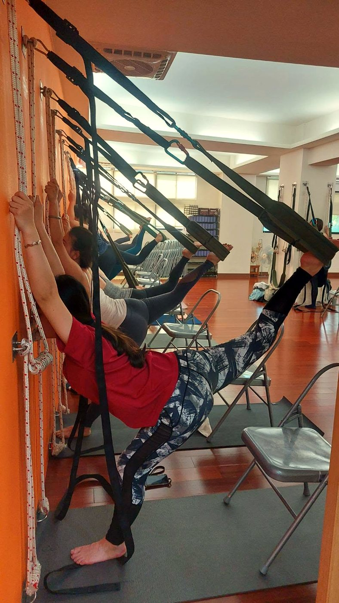

落枕、緊到轉不了頭，先別急著硬扳

早上一睜眼，脖子像被卡住，往某一邊一轉就痛得縮起來。你可能會很想用手把它「扳回去」，或請人大力揉開。先停一下——落枕當下，硬扳跟猛按往往會讓它更緊、更痛。
落枕當下，脖子其實在「保護」你
落枕多半不是骨頭跑掉，而是睡姿讓某條頸部肌肉被拉扯、或維持在一個緊繃的位置太久，局部出現輕微發炎。這時候胸鎖乳突肌、上斜方肌、提肩胛肌會反射性地縮緊，像在幫你「上鎖」，不讓那個角度再被拉到。你覺得的「轉不動」，其實是身體踩了煞車。
所以你越用力想轉開、想硬扳，等於一直去踩已經很敏感的地方，肌肉只會鎖得更緊。急性期的重點不是「打開它」，而是先讓它安心下來。
落枕當下是發炎＋保護性緊繃，硬扳、猛按、用力轉，都是在刺激它更緊。
急性期，這樣溫和對待它
- 在不痛的範圍小幅活動：慢慢、小小地轉一點點，只走到「有點緊、但不痛」就停，別去挑戰最痛那個角度。
- 熱敷：用溫熱毛巾或暖暖包敷在痠緊的那一側 10～15 分鐘，幫忙放鬆、促進循環。
- 放慢呼吸：緊繃時人會不自覺聳肩、憋氣，先把肩膀放下、把氣吐長，肌肉才有機會鬆一點。
- 暫時避開：低頭滑手機、側躺壓到、吹冷氣直吹脖子，這幾天先閃一下。
等它不痛了，再處理「為什麼會落枕」
很多人落枕不是第一次，這通常在提醒你：平常肩頸就已經失衡了。長期圓肩、頭往前傾，上斜方跟提肩胛一直被拉著加班，深頸屈肌卻沒力，脖子本來就處在一個緊繃的底子上，睡姿一不對就容易「爆」。等急性期過了、不痛了，才是把根本練回來的時機。壁繩瑜伽的好處，是能用繩子分擔身體重量，讓你在有支撐、脖子不用硬撐的狀態下，慢慢把該鬆的鬆開、該練的喚醒，如果你想先了解它怎麼運作，可以看看身體很硬、沒基礎為什麼反而更適合壁繩。

現在就能做的一個小練習
如果已經不是最痛的急性期，可以試試溫和的「頸部放鬆呼吸」：坐正、肩膀放下，先深吸一口氣，吐氣時把下巴微微內收（像在點頭一點點，做出雙下巴的感覺），停留 3～5 秒再放鬆，重複 5 次。動作要小、不要求角度，全程配合慢慢吐氣。這個練習是在喚醒深頸屈肌、幫上斜方鬆一點，它不會一次就讓脖子變輕鬆，需要規律、每天做一點，才會慢慢有感覺。
本文為體態與姿勢的一般衛教與練習分享，非醫療診斷或治療。若有疼痛、舊傷或特殊病史，請先諮詢合格醫療專業人員。
如果落枕合併手麻、手臂無力、劇烈疼痛，或痛到影響睡眠好幾天沒改善，請盡快找醫療專業評估，別自己硬撐。